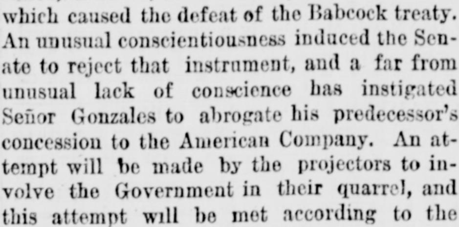
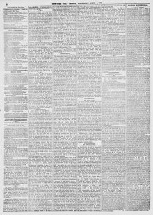

As Might Have Been Expected.Como era de esperarse.
New-York Tribune. New York [N.Y.], April 8, 1874. Page 4. Published by New York Tribune. A daily newspaper, 1866–1924.New-York Tribune. New York [N.Y.], 8 de abril de 1874. Página 4. Publicado por New York Tribune. Periódico diario, 1866–1924. View the originalVer el original


See the full pageVer la página completaSeñor Gonzales abrogated his predecessor's concession to the American Company, prompting an attempt by the enterprise's projectors to involve the United States Government in their quarrel. The newspaper states that the capitalists entered the business knowingly and at their own risk, and therefore have no claim to ask the U.S. Government to defend or avenge them.El señor González abrogó la concesión otorgada por su predecesor a la compañía estadounidense, lo que motivó un intento por parte de los promotores de la empresa de involucrar al Gobierno de los Estados Unidos en su disputa. El periódico afirma que los capitalistas ingresaron en el negocio a sabiendas y por su propia cuenta y riesgo, por lo que carecen de derecho a solicitar que el Gobierno de los EE. UU. los defienda o los vengue.
FULL TEXT:TEXTO COMPLETO:
New-York Tribune April 8, 18748 de abril de 1874
The Samana Bay Company have succeeded as ill as President Grant in their efforts at the annexation of Santo Domingo. They have failed, however, from contrary reasons to those which caused the defeat of the Babcock treaty. An unusual conscientiousness induced the Senate to reject that instrument, and a far from unusual lack of conscience has instigated Señor Gonzales to abrogate his predecessor's concession to the American Company. An attempt will be made by the projectors to involve the Government in their quarrel, and this attempt will be met according to the logical habit of a portion of the press by efforts to defeat this scheme through abuse of the enterprise and those interested in it. We see no necessity for siding with either party in this matter. When the enterprise was set on foot, we rendered full justice to the motives and purposes of the capitalists who were endeavoring in this way to open up a new highway of commerce. But while we saw nothing objectionable in their scheme and hoped for its success, we could not refrain from the prediction that sooner or later the exigencies of Dominican politics would give rise to trouble which would call for the intervention of the United States, and that this would be refused, no matter under what pretext it was asked. The gentlemen who went into this business were not born yesterday. They knew what risks they were taking. They knew the character of those ex-officio brigands who make their living out of revolutions in that island. It was the business of the buyers to look carefully at their bargain, and not to look to the Government to avenge them in case they were cheated. They have no more right to ask the Government to defend them against the scoundrels who are trying to rob them.La Compañía de la Bahía de Samaná ha tenido tan mal éxito como el presidente Grant en sus esfuerzos por la anexión de Santo Domingo. Han fracasado, sin embargo, por razones contrarias a las que causaron la derrota del tratado Babcock. Una concienciación inusual indujo al Senado a rechazar ese instrumento, y una falta de conciencia nada inusual ha instigado al señor Gonzales a abrogar la concesión de su predecesor a la Compañía estadounidense. Se hará un intento por los proyectistas de involucrar al Gobierno en su disputa, y este intento será enfrentado según el hábito lógico de una porción de la prensa por esfuerzos para derrotar este plan mediante el abuso de la empresa y los interesados en ella. No vemos necesidad de tomar partido por ninguna de las partes en este asunto. Cuando la empresa fue puesta en pie, hicimos plena justicia a los motivos y propósitos de los capitalistas que estaban intentando de esta manera abrir una nueva vía de comercio. Pero aunque no vimos nada objetable en su plan y esperábamos su éxito, no pudimos abstenernos de la predicción de que tarde o temprano las exigencias de la política dominicana darían lugar a problemas que demandarían la intervención de los Estados Unidos, y que esta sería rechazada, no importa bajo qué pretexto se pidiera. Los caballeros que entraron en este negocio no nacieron ayer. Sabían los riesgos que estaban tomando. Conocían el carácter de esos bandidos ex-oficio que se ganan la vida con las revoluciones en esa isla. Era asunto de los compradores mirar cuidadosamente su trato, y no buscar que el Gobierno los vengara en caso de ser engañados. No tienen más derecho a pedir al Gobierno que los defienda contra los bribones que están tratando de robarlos.
It is not worth while to complicate the question by bringing in the supposed influence of the British Government in inducing Gonzales to take his recent course. It was an old maxim of art that a god should not be brought out of the flies, unless the matter on the stage were important enough to call for his assistance. In this case the cruise of the Woodlark is not a necessary explanation of Gonzales's action. We need not look any further than the dictator's cabinet for a motive. No one suspects Señor Baez of any very lofty motives in making the original concession. When he and Captain-General Gonzales arranged the recent farcical revolution by which he gave up the Government to him, there is no question that the annual rental of Samana Bay was the principal resource the new rulers looked to for furnishing their empty treasury. But it is stated that Gonzales did on arriving at his capital warn the Company not to pay their rent to anybody else, and to assure them of his friendly regard. While they were waiting for official information of his inauguration, which did not come, and were naturally hesitating about paying $150,000 to a usurper who might be driven out to-morrow, he took their silence for a refusal or for a notice, and they allowed his drafts to be protested. After this, nothing he could do ought to surprise them. In common with statesmen of his class, if he has no money, he has no quantity of any dignity. He needed no further incentive, from Consul-General St. John, the British Government, or anybody else, to resent the prudent suspicions of the Yankees, and to answer them by an act as public and as thorough as possible.No vale la pena complicar la cuestión trayendo la supuesta influencia del Gobierno británico en inducir a Gonzales a tomar su reciente curso. Era una vieja máxima del arte que un dios no debe ser sacado de las alturas, a menos que el asunto en el escenario fuera lo suficientemente importante como para demandar su asistencia. En este caso el crucero del Woodlark no es una explicación necesaria de la acción de Gonzales. No necesitamos buscar más allá del gabinete del dictador por un motivo. Nadie sospecha que el señor Báez tuviera motivaciones muy elevadas al hacer la concesión original. Cuando él y el Capitán General Gonzales arreglaron la reciente revolución farsesca por la cual le entregó el Gobierno a él, no hay duda de que la renta anual de la Bahía de Samaná era el principal recurso con el que los nuevos gobernantes contaban para surtir su hacienda vacía. Pero se afirma que Gonzales al llegar a su capital advirtió a la Compañía que no pagaran su renta a nadie más, y les aseguró su consideración amistosa. Mientras esperaban información oficial de su inauguración, que no vino, y naturalmente vacilaban en pagar $150,000 a un usurpador que podría ser expulsado mañana, él tomó su silencio por una negativa o por un aviso, y permitieron que sus letras fueran protestadas. Después de esto, nada que pudiera hacer debería sorprenderlos. En común con los estadistas de su clase, si no tiene dinero, no tiene cantidad alguna de dignidad. No necesitaba incentivo adicional, del Cónsul General St. John, del Gobierno británico, o de nadie más, para resentir las prudentes sospechas de los yanquis, y responderles con un acto tan público y tan completo como fuera posible.
The cause of the Company's failure was inherent in this enterprise from the beginning. They had no right to expect honest and fair dealing from the Dominican Government, and it was not reasonable to hope for any permanency in the occupants of power at Santo Domingo. Their scheme was in most respects an admirable one, but it has been mismanaged from the start. It could only have succeeded by making a sufficient force of Americans on the place against the greedy and treacherous "statesmen" who made the grant. This was the only course to adopt if the enterprise was a genuine one. If it was merely intended for a piece of stock jobbing, it might as well die now as later, and in either case it has no just claim that we can see to come upon the United States for protection or indemnification.La causa del fracaso de la Compañía fue inherente a esta empresa desde el principio. No tenían derecho a esperar un trato honesto y justo del Gobierno dominicano, y no era razonable esperar permanencia alguna en los ocupantes del poder en Santo Domingo. Su plan era en la mayoría de los aspectos uno admirable, pero ha sido mal manejado desde el comienzo. Solo podría haber tenido éxito poniendo una fuerza suficiente de estadounidenses en el lugar contra los codiciosos y traicioneros «estadistas» que hicieron la concesión. Este era el único curso a adoptar si la empresa era genuina. Si solo estaba destinada a ser una pieza de especulación bursátil, lo mismo daría que muriera ahora que después, y en cualquier caso no tiene reclamo justo que podamos ver para acudir a los Estados Unidos por protección o indemnización.